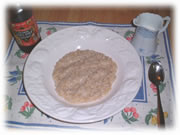

| ..*..*.. 2002年11月16日(土) くもり ..*..*.. Judyに教えてもらったオートミール。以前は、そこらへんで安いのを買ってたんだけど、これがおいしいと聞いて買ってみました。ほんとうに歯ごたえがあっておいしいの。 John McCann's Irish Oatmeal といって、Odlum Group Ltd から出ています。28oz(799g)で $4.59。アイルランドで作られているオートミールですって。 ただ、普通のオートミールはお湯を注ぐだけ、とか、電子レンジで何分、という風にすぐにできるのですが、これは30分間ぐつぐつお鍋で煮ます。だから、急いでいるときには間に合わないんですよね。でも時間があれば、朝食とか夜食なんかにいいです。オートミール:水(牛乳)=1:4を弱火で30分煮ます。  お砂糖やはちみつなどをかけて食べます。私は、食べながら、メープルシロップと牛乳をかけていただきます。 |